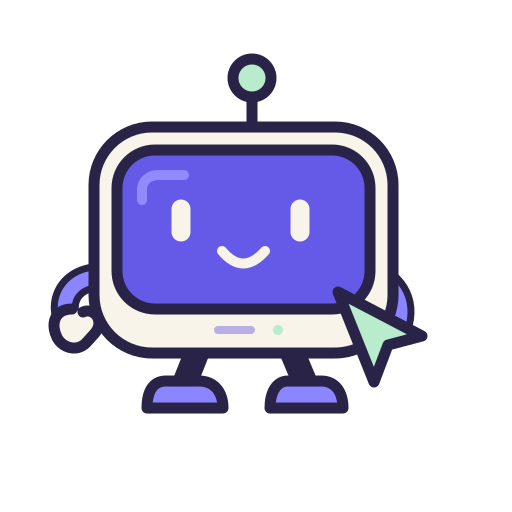
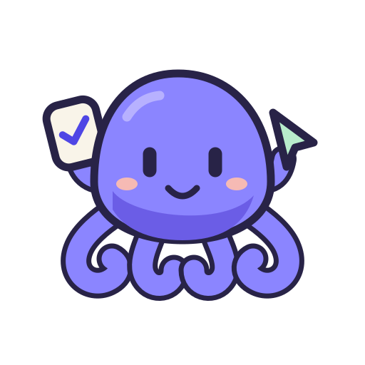
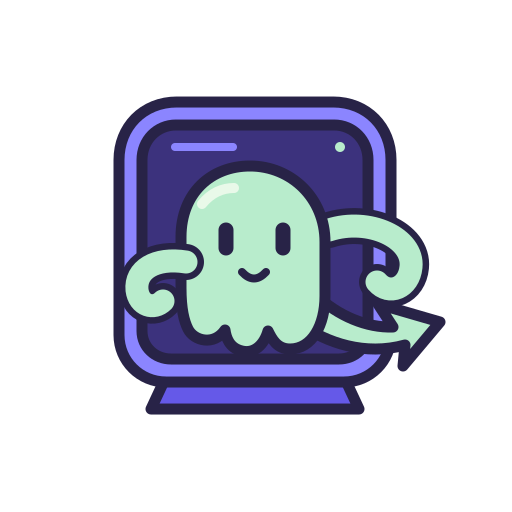

01SCREEN BUDDY

mob
YOUR DESKTOP SIDEKICK
屏幕小搭档
屏幕就是它的脸，指针就是它的手。
把远程桌面变成一个能看、能动的小助手。
Dock
32px
下载 SVG · 建议优先考虑：产品能力表达最直接
三个卡通 Logo 方向 · 让「看见桌面、执行任务、连接远方」变得有形。

YOUR DESKTOP SIDEKICK
屏幕就是它的脸，指针就是它的手。
把远程桌面变成一个能看、能动的小助手。
下载 SVG · 建议优先考虑：产品能力表达最直接

MANY TOOLS. ONE LITTLE HELPER.
一只手接任务，一只手操作，完成后打勾。
让 AI 调用工具、执行工作有一个可爱的形象。
下载 SVG · 适合延展：运行、等待、完成等状态表情

YOUR OFFICE, WITHIN REACH.
从窗口探出身子，把指针伸向另一端。
无论身在何处，都能连接办公室里的电脑。
下载 SVG · 适合强调：远程连接与随时在场的陪伴感
沿用 mob 界面的紫色，搭配奶白与薄荷绿。轮廓采用圆角和粗线条；大图表达角色，小图保留辨识度。当前为候选方案，选定后再制作正式 App 图标。